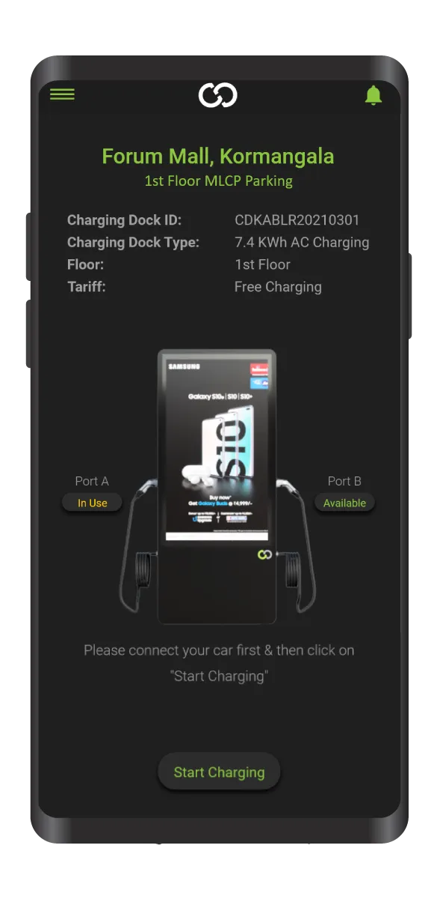
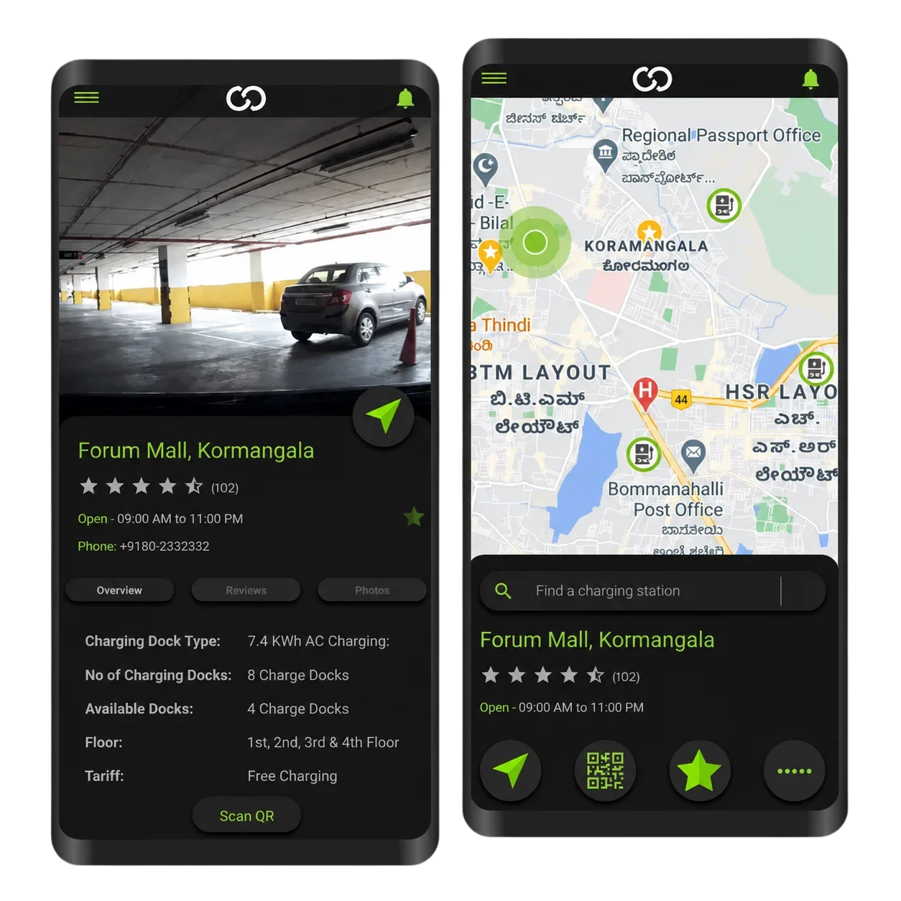

A smart EV charging platform that helps users locate nearby charging stations, monitor battery levels, and remotely manage charging sessions for a seamless electric vehicle experience.

The objective of this case study is to illustrate the development and implementation of ChargeDock, an EV charge station finder and locator app. ChargeDock is designed to provide users with a seamless experience in locating EV charge stations, monitoring charge levels, and remotely controlling charging sessions. Through this case study, we aim to highlight the challenges faced by EV users, the features and functionalities of ChargeDock, and the positive outcomes achieved through its implementation.
ChargeDock has provided EV owners with a convenient and efficient solution for locating charging stations and managing charging sessions remotely.

The app's comprehensive charging station locator has improved accessibility to charging infrastructure, reducing range anxiety for EV owners.
With real-time charge level monitoring and remote charging control, users can optimize their charging schedules and minimize downtime.
With real-time charge level monitoring, users can track their EV's battery status remotely and receive notifications when the charge level is low.